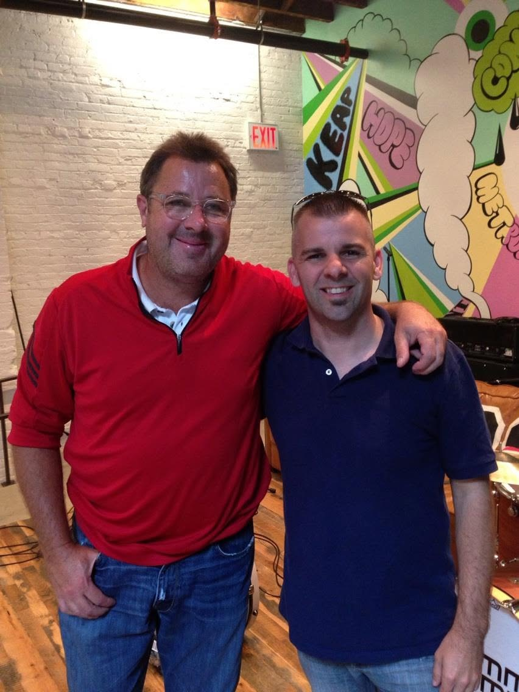
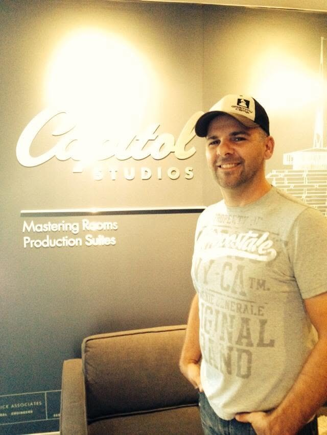
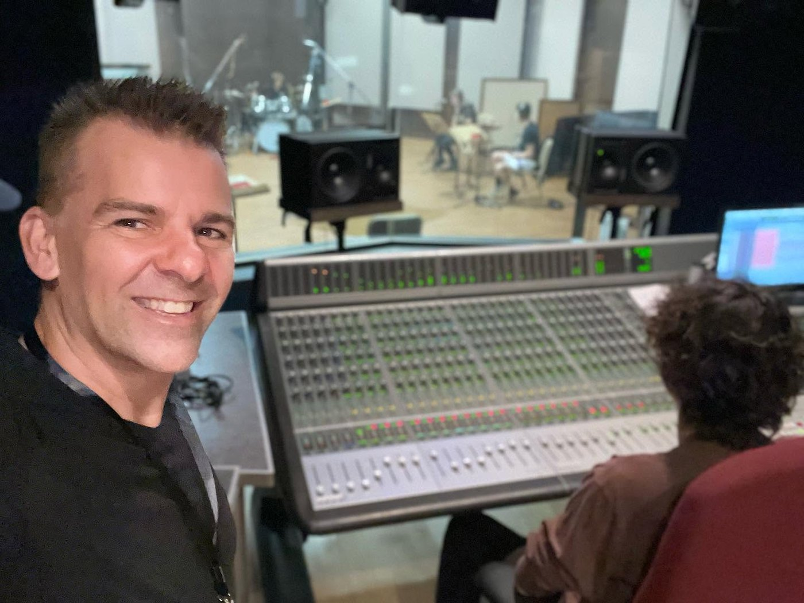
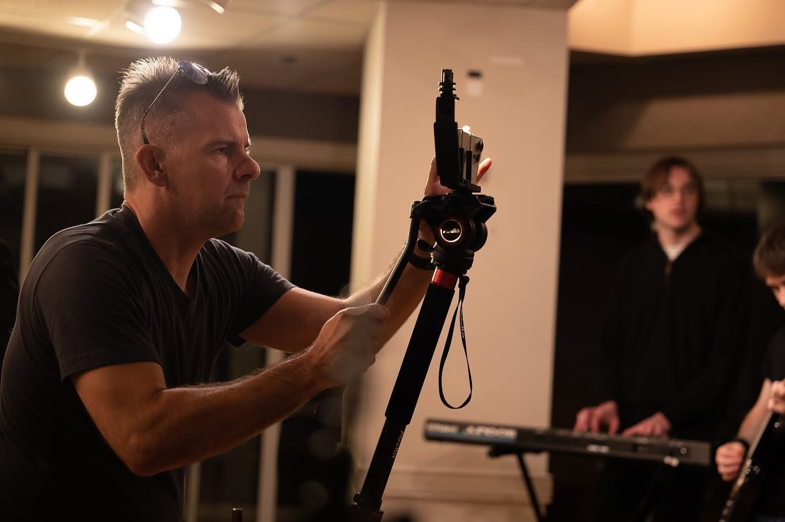
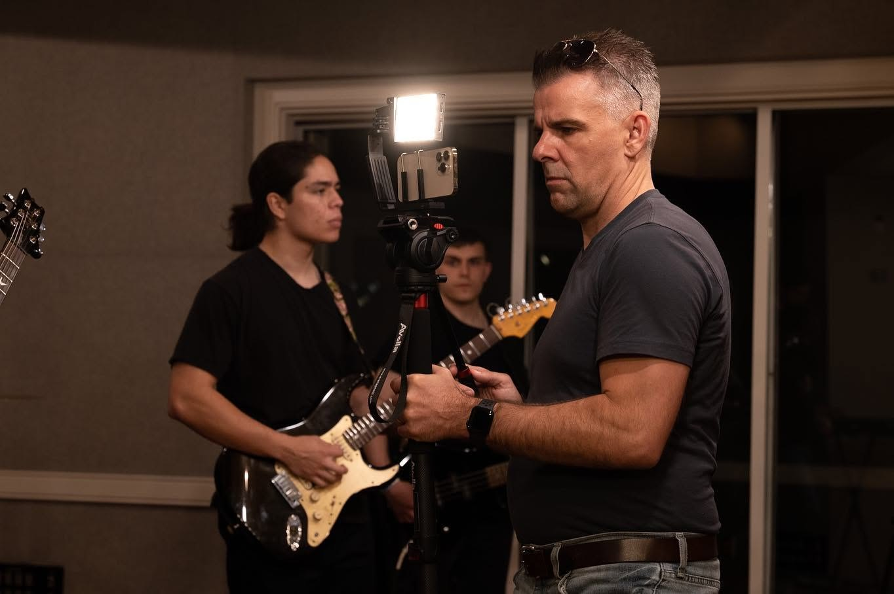
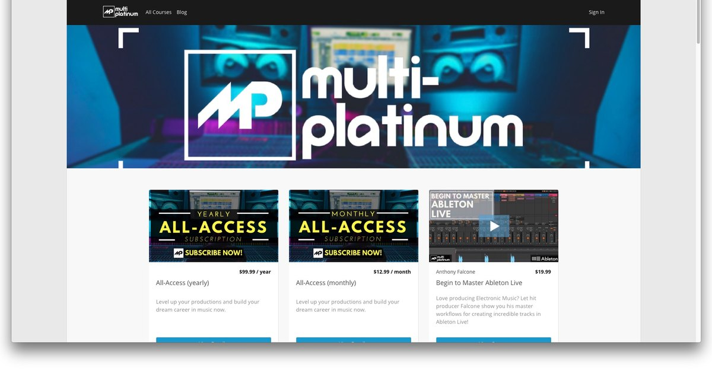
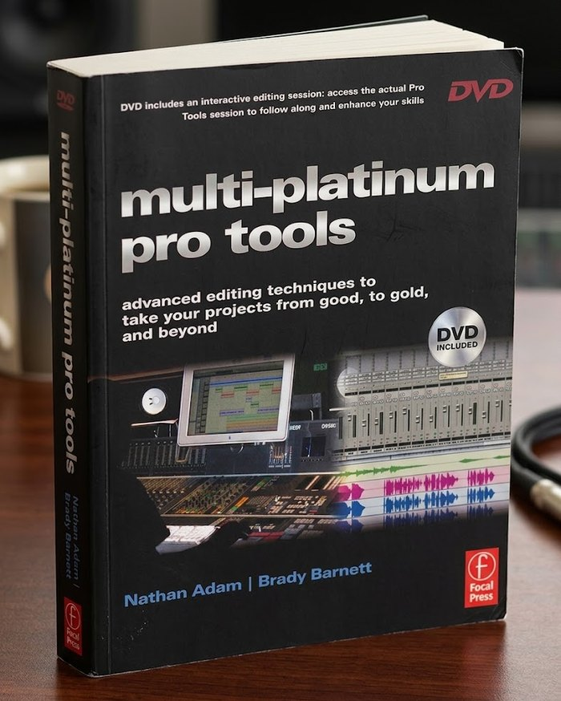
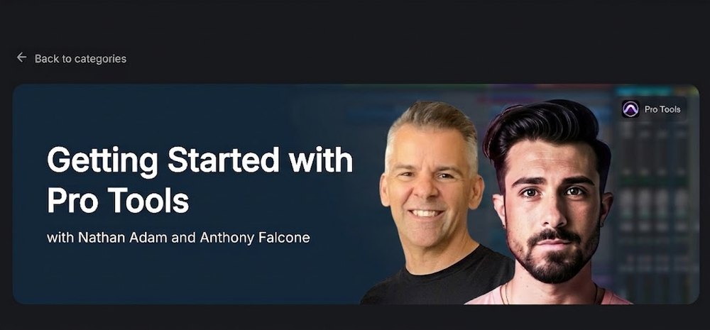

Credits
Selected work
Twenty-five years of production, engineering, and publishing, nearly all of it on technology that had just shown up and that nobody had worked out yet.
- 142 episodes post-produced
- 13 countries broadcast
- 2 books, internationally distributed
- 50+ courses produced
- 6,000+ students taught

Television
-
 Post producer / editor · RFD NetworkEpisodes 1 through 142, 2009–2015. Broadcast in thirteen countries to a weekly audience of roughly 500,000. Guests cut over that run included Collin Raye, Debbie Boone, Neal McCoy, the Grascals, Jim Stafford, Larry Gatlin, Moe Bandy, Dusty Rogers Jr., Les Brown Jr. and Rhonda Vincent.
Post producer / editor · RFD NetworkEpisodes 1 through 142, 2009–2015. Broadcast in thirteen countries to a weekly audience of roughly 500,000. Guests cut over that run included Collin Raye, Debbie Boone, Neal McCoy, the Grascals, Jim Stafford, Larry Gatlin, Moe Bandy, Dusty Rogers Jr., Les Brown Jr. and Rhonda Vincent. -
 Producer / editor · MSNBCBrought on as the studio expert for a piece on pitch correction, "Singing or Synching?" A YouTube upload of the segments passed 820,000 views before it came down.
Producer / editor · MSNBCBrought on as the studio expert for a piece on pitch correction, "Singing or Synching?" A YouTube upload of the segments passed 820,000 views before it came down.
Music & audio engineering
Vince Gill · Earl Scruggs · The Oak Ridge Boys · Paul Franklin · Bill Medley · Collin Raye


-
 Recorded, edited and mixed the orchestral score · 2009Staged at the Mansion Theater in Branson, Missouri, and tracked at the Mansion Studios. Watch a performance.
Recorded, edited and mixed the orchestral score · 2009Staged at the Mansion Theater in Branson, Missouri, and tracked at the Mansion Studios. Watch a performance. -

Editing, pocketing and pitch correctionNashville sessions, 2000sThe work that became the subject of the first book.


Instructional video
-
 Producer, videographer and editor · Legacy Learning Systems · 2005–06Ten discs, fourteen hours, shot and edited start to finish. Reached more than 100,000 guitar students worldwide, and won the Acoustic Guitar Player's Choice Gold Award and a Telly Award for educational video production. Legacy Learning Systems submitted it and holds the award. Still sold today.
Producer, videographer and editor · Legacy Learning Systems · 2005–06Ten discs, fourteen hours, shot and edited start to finish. Reached more than 100,000 guitar students worldwide, and won the Acoustic Guitar Player's Choice Gold Award and a Telly Award for educational video production. Legacy Learning Systems submitted it and holds the award. Still sold today. -

Founder · 50+ courses producedOne of the first online training companies in music production. Courses on recording, editing, and mixing, taught by working Nashville engineers. -
 ProducerBroadcasting from inside a headset, as an avatar, to an audience that wasn't in the room.
ProducerBroadcasting from inside a headset, as an avatar, to an audience that wasn't in the room.
Books
-

With Brady Barnett · Focal Press, 2006 · ISBN 978-0-240-52023-0Distributed internationally. Eight chapters, over 300 colour illustrations, and a DVD carrying a real Nashville session in both pre-edited and final-mix form. Publisher's page. -
With Kevin Ward · Focal Press, 2011 · ISBN 978-0-240-81871-9Twelve chapters taking a demo tracked in a garage through to a radio-ready rock mix, with an interactive companion site of HD video tutorials. Publisher's page.
-
Doctoral dissertation · Tennessee State University, 2022
-
AES Journal Conference SummaryJournal of the Audio Engineering Society, 2016
Curriculum
-
 GRAMMY Foundation · 2018 · online curriculumThree tracks (audio and mixing, video production, and electronic music production) built for students who couldn't get to a camp in person.
GRAMMY Foundation · 2018 · online curriculumThree tracks (audio and mixing, video production, and electronic music production) built for students who couldn't get to a camp in person. -
GRAMMY Foundation · 2016 · online curriculum
-

With Anthony Falcone · LANDR Courses · 102 lessonsOriginally released as Producing Electronic Music in Pro Tools, and renamed by LANDR. Take the course.
Teaching
-
Associate Professor of Media Production · Mike Curb College of Entertainment & Music BusinessCinema, television and media production. More than 6,000 students.
-
 Audio engineering faculty · 50+ camps since 2009The GRAMMY Museum's program for high school students. Los Angeles at USC since 2009, New York at the Converse Rubber Tracks studios 2011–2018, and Nashville at Belmont 2012–2018. That last one included camps at 34 Music Square East, home of the historic Columbia Studio A and the Quonset Hut.
Audio engineering faculty · 50+ camps since 2009The GRAMMY Museum's program for high school students. Los Angeles at USC since 2009, New York at the Converse Rubber Tracks studios 2011–2018, and Nashville at Belmont 2012–2018. That last one included camps at 34 Music Square East, home of the historic Columbia Studio A and the Quonset Hut.